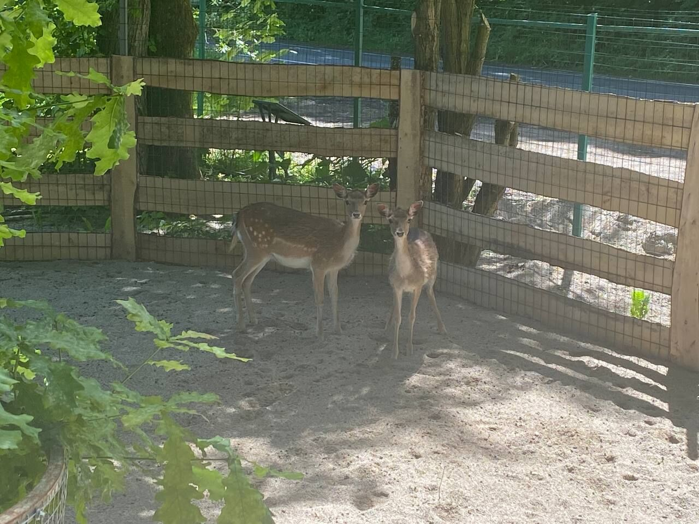
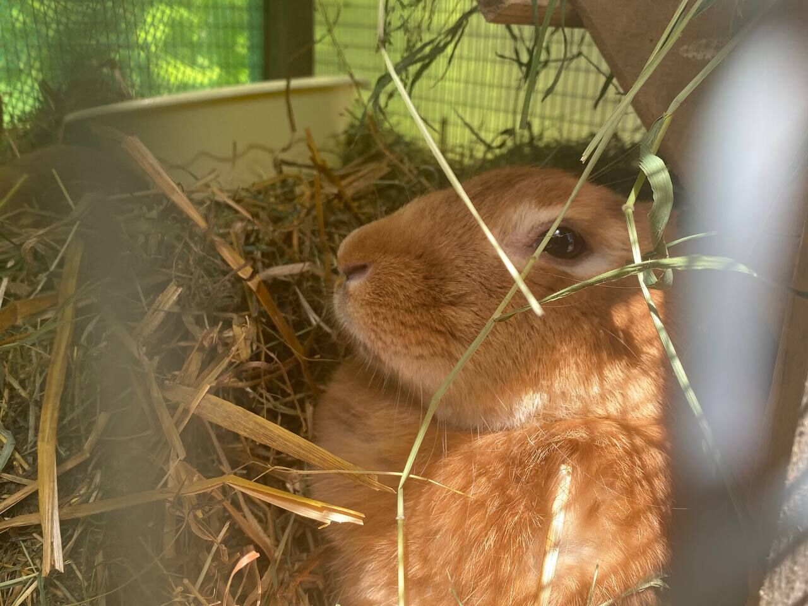
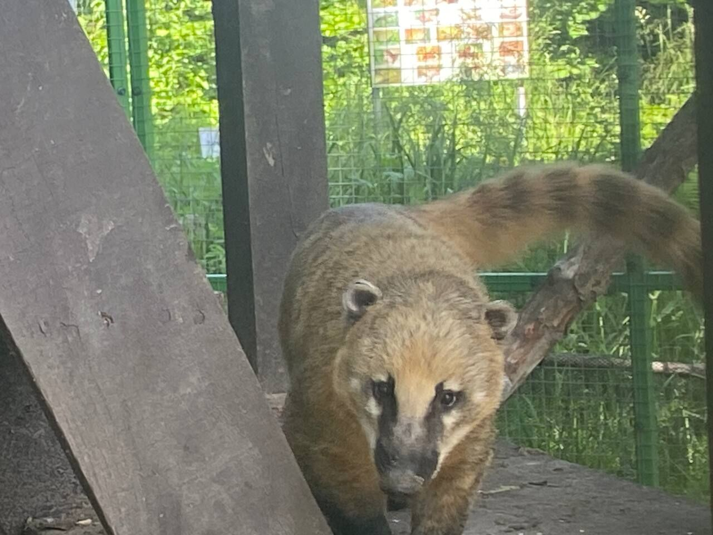
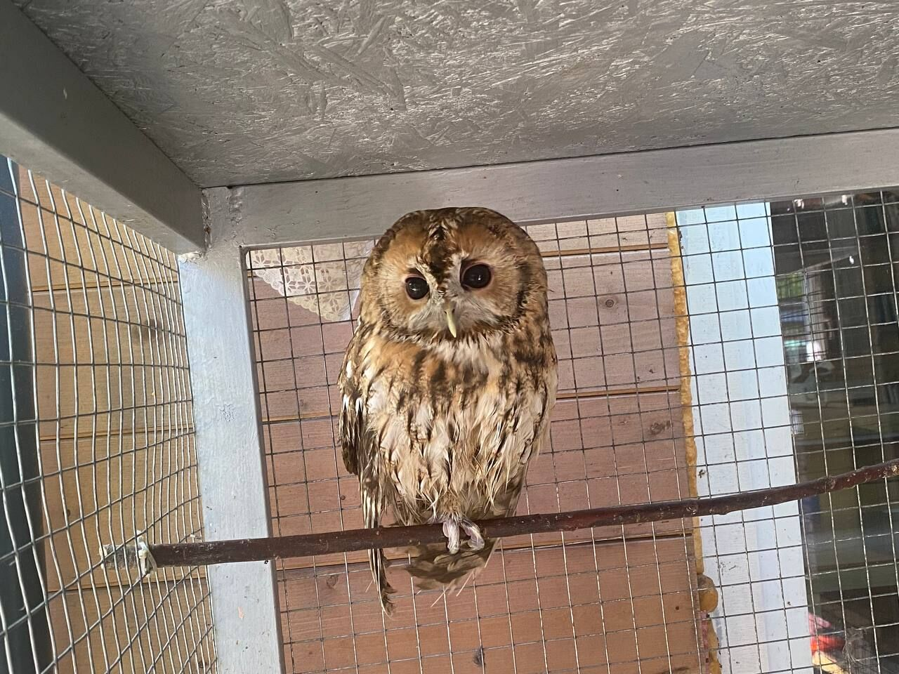
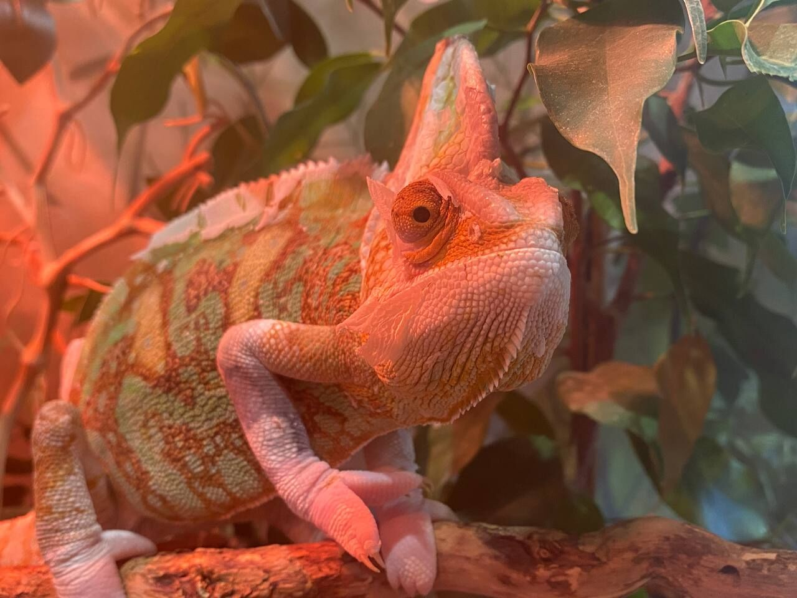
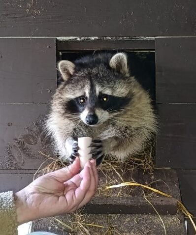
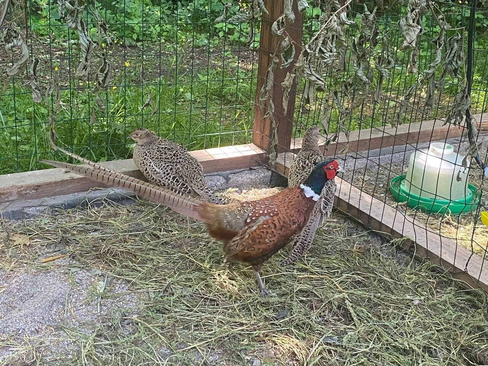

Живой уголок музея
Все обитатели музея
На главной странице — лишь часть наших соседей. Здесь собраны все звери, птицы и террариумные жители, с которыми можно встретиться, заглянув в музей.

Тихая соседка музейного двора. Пятнистый летний окрас помогает ей прятаться среди деревьев почти как в дикой природе.

Никуда не торопится и охотнее всего проводит день, зарывшись в сено, — самый невозмутимый житель вольеров.

Самый любопытный житель вольера — подходит к самой сетке, чтобы разглядеть гостей не хуже, чем они её.

Днём дремлет на жёрдочке, а с наступлением сумерек становится настоящей хозяйкой вольера.

Меняет цвет прямо на глазах посетителей — в зависимости от настроения, температуры и освещения.

Выпрашивает угощение лапкой через окошко домика — отказать ему почти невозможно.

Яркий самец и его более скромные по окрасу соседки разгуливают по вольеру, будто сошли со страниц книги про лес.
Список пополняется — карточки, добавленные через форму «Добавить», сохраняются в этом браузере.
← Вернуться на главную